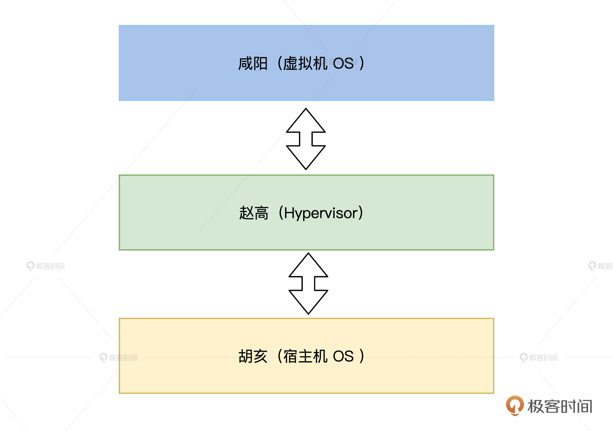

- 00 开篇词 为什么要学写一个操作系统？.md.html
- 00 编辑手记 升级认知，迭代自己的操作系统.md.html
- 01 程序的运行过程：从代码到机器运行.md.html
- 02 几行汇编几行C：实现一个最简单的内核.md.html
- 03 黑盒之中有什么：内核结构与设计.md.html
- 04 震撼的Linux全景图：业界成熟的内核架构长什么样？.md.html
- 05 CPU工作模式：执行程序的三种模式.md.html
- 06 虚幻与真实：程序中的地址如何转换？.md.html
- 07 Cache与内存：程序放在哪儿？.md.html
- 08 锁：并发操作中，解决数据同步的四种方法.md.html
- 09 瞧一瞧Linux：Linux的自旋锁和信号量如何实现？.md.html
- 10 设置工作模式与环境（上）：建立计算机.md.html
- 11 设置工作模式与环境（中）：建造二级引导器.md.html
- 12 设置工作模式与环境（下）：探查和收集信息.md.html
- 13 第一个C函数：如何实现板级初始化？.md.html
- 14 Linux初始化（上）：GRUB与vmlinuz的结构.md.html
- 15 Linux初始化（下）：从_start到第一个进程.md.html
- 16 划分土地（上）：如何划分与组织内存？.md.html
- 17 划分土地（中）：如何实现内存页面初始化？.md.html
- 18 划分土地（下）：如何实现内存页的分配与释放？.md.html
- 19 土地不能浪费：如何管理内存对象？.md.html
- 20 土地需求扩大与保障：如何表示虚拟内存？.md.html
- 21 土地需求扩大与保障：如何分配和释放虚拟内存？.md.html
- 22 瞧一瞧Linux：伙伴系统如何分配内存？.md.html
- 23 瞧一瞧Linux：SLAB如何分配内存？.md.html
- 24 活动的描述：到底什么是进程？.md.html
- 25 多个活动要安排（上）：多进程如何调度？.md.html
- 26 多个活动要安排（下）：如何实现进程的等待与唤醒机制？.md.html
- 27 瞧一瞧Linux：Linux如何实现进程与进程调度_.md.html
- 28 部门分类：如何表示设备类型与设备驱动？.md.html
- 29 部门建立：如何在内核中注册设备？.md.html
- 30 部门响应：设备如何处理内核I_O包？.md.html
- 31 瞧一瞧Linux：如何获取所有设备信息？.md.html
- 32 仓库结构：如何组织文件_.md.html
- 33 仓库划分：文件系统的格式化操作.md.html
- 34 仓库管理：如何实现文件的六大基本操作？.md.html
- 35 瞧一瞧Linux：虚拟文件系统如何管理文件？.md.html
- 36 从URL到网卡：如何全局观察网络数据流动？.md.html
- 37 从内核到应用：网络数据在内核中如何流转.md.html
- 38 从单排到团战：详解操作系统的宏观网络架构.md.html
- 39 瞧一瞧Linux：详解socket实现与网络编程接口.md.html
- 40 瞧一瞧Linux：详解socket的接口实现.md.html
- 41 服务接口：如何搭建沟通桥梁？.md.html
- 42 瞧一瞧Linux：如何实现系统API？.md.html
- 43 虚拟机内核：KVM是什么？.md.html
- 44 容器：如何理解容器的实现机制？.md.html
- 45 ARM新宠：苹果的M1芯片因何而快？.md.html
- 46 AArch64体系：ARM最新编程架构模型剖析.md.html
- LMOS来信：第二季课程带你“手撕”计算机基础.md.html
- 大咖助场 以无法为有法，以无限为有限.md.html
- 用户故事 yiyang：我的上机实验“爬坑指南”.md.html
- 用户故事 成为面向“知识库”的工程师.md.html
- 用户故事 技术人如何做选择，路才越走越宽？.md.html
- 用户故事 操作系统发烧友：看不懂？因为你没动手.md.html
- 用户故事 用好动态调试，助力课程学习.md.html
- 用户故事 艾同学：路虽远，行则将至.md.html
- 结束语 生活可以一地鸡毛，但操作系统却是心中的光.md.html
- 捐赠
43 虚拟机内核：KVM是什么？
你好，我是LMOS。
上节课，我们理解了Linux里要如何实现系统API。可是随着云计算、大数据和分布式技术的演进，我们需要在一台服务器上虚拟化出更多虚拟机，还要让这些虚拟机能够弹性伸缩，实现跨主机的迁移。
而虚拟化技术正是这些能力的基石。这一节课，就让我们一起探索一下，亚马逊、阿里、腾讯等知名公司用到的云虚拟主机，看看其中的核心技术——KVM虚拟化技术。
理解虚拟化的定义
什么是虚拟化？在我看来，虚拟化的本质是一种资源管理的技术，它可以通过各种技术手段把计算机的实体资源（如：CPU、RAM、存储、网络、I/O等等）进行转换和抽象，让这些资源可以重新分割、排列与组合，实现最大化使用物理资源的目的。
虚拟化的核心思想
学习了前面的课程我们发现，操作系统的设计很高明，已经帮我们实现了单机的资源配置需求，具体就是在一台物理机上把CPU、内存资源抽象成进程，把磁盘等资源抽象出存储、文件、I/O等特性，方便之后的资源调度和管理工作。
但随着时间的推移，我们做个统计就会发现，其实现在的PC机平常可能只有50%的时间处于工作状态，剩下的一半时间都是在闲置资源，甚至要被迫切换回低功耗状态。这显然是对资源的严重浪费，那么我们如何解决资源复用的问题呢？
这个问题确实很复杂，但根据我们的工程经验，但凡遇到不太好解决的问题，我们就可以考虑抽象出一个新的层次来解决。于是我们在已有的OS经验之上，进行了后面这样的设计。

结合图解，可以看出最大的区别就是后者额外引入了一个叫Hypervisor/Virtual Machine Monitor（VMM）的层。在这个层里面我们就可以做一些“无中生有”的事情，向下统一管理和调度真实的物理资源，向上“骗”虚拟机，让每个虚拟机都以为自己都独享了独立的资源。
而在这个过程中，我们既然作为一个“两头骗的中间商”，显然要做一些瞒天过海的事情（访问资源的截获与重定向）。那么让我们先暂停两分钟，思考一下具体如何设计，才能实现这个“两头骗”的目标呢？
用赵高矫诏谈理解虚拟化
说起欺上瞒下，有个历史人物很有代表性，他就是赵高。始皇三十七年（前210年），统一了天下的秦始皇（OS）在生平最后一次出巡路上去世了，管理诏书的赵高（Hypervisor/VMM）却趁机发动了阴谋，威胁丞相李斯，矫诏处死扶苏与蒙恬。

赵高隐瞒秦始皇死讯，还伪造了诏书，回到了咸阳最终一顿忽悠立了胡亥为为帝。这段故事后世称为沙丘之变。
作为一个成功瞒天过海，实现了偷梁换柱的中间人赵高，他成事的关键要点包括这些，首先要像咸阳方向伪造一切正常的假象（让被虚拟化的机器看起来和平常一样），其次还要把真正核心的权限获取到手（Hypervisor/VMM要想办法调度真正的物理资源）。
所以以史为鉴。在具体实现的层面，我们会发现，这个瞒天过海的目标其实有几种实现方式。
一种思路是赵高一个人全权代理，全部模拟和代理出所有的资源（软件虚拟化技术），另一种思路是朝中有人（胡亥）配合赵高控制、调度各种资源的使用，真正执行的时候，再转发给胡亥去处理（硬件虚拟化技术）。
我们发现如果如果是前者，显然赵高会消耗大量资源，并且还可能会遇到一些安全问题，所以他选择了后者。
历史总是惊人地相似，在软件虚拟化遇到了无法根治的性能瓶颈和安全等问题的时候，软件工程师就开始给硬件工程师提需求了，需求背后的核心想法是这样的：能不能让朝中有人，有问题交给他，软件中间层只管调度资源之类的轻量级工作呢？
KVM架构梳理
答案显然是可以的，根据我们对计算机的了解就会发现，计算机最重要几种资源分别是：计算（CPU）、存储（RAM、ROM），以及为了连接各种设备抽象出的I/O资源。
所以Intel分别设计出了VT-x指令集、VT-d指令集、VT-c指令集等技术来实现硬件虚拟化，让CPU配合我们来实现这个目标，了解了核心思想之后，让我们来看一看KVM的架构图。（图片出自论文《Residency-Aware Virtual Machine Communication Optimization: Design Choices and Techniques》）
是不是看起来比较复杂？别担心，我用大白话帮你梳理一下。
首先，客户机（咸阳）看到的硬件资源基本都是由Hypervisor（赵高）模拟出来的。当客户机对模拟设备进行操作时，命令就会被截获并转发给实际设备/内核模块（胡亥）去处理。
通过这种架构设计Hypervisor层，最终实现了把一个客户机映射到宿主机OS系统的一个进程，而一个客户机的vCPU则映射到这个进程下的独立的线程中。同理，I/O也可以映射到同一个线程组内的独立线程中。
这样，我们就可以基于物理机OS的进程等资源调度能力，实现不同虚拟机的权限限定、优先级管理等功能了。
KVM核心原理
通过前面的知识，我们发现，要实现成功的虚拟化，核心是要对资源进行“欺上瞒下”。而对应到我们计算机内的最重要的资源，可以简单抽象成为三大类，分别是：CPU、内存、I/O。接下来，我们就来看看如何让这三大类资源做好虚拟化。
CPU虚拟化原理
众所周知，CPU是我们计算机最重要的模块，让我们先看看Intel CPU是如何跟Hypervisor/VMM“里应外合”的。
Intel定义了Virtual Machine Extension（VMX）这个处理器特性，也就是传说中的VT-x指令集，开启了这个特性之后，就会存在两种操作模式。它们分别是：根操作（VMX root operation）和非根操作（VMX non-root operation）。
我们之前说的Hypervisor/VMM，其实就运行在根操作模式下，这种模式下的系统对处理器和平台硬件具有完全的控制权限。
而客户软件（Guest software）包括虚拟机内的操作系统和应用程序，则运行在非根操作模式下。当客户软件执行一些特殊的敏感指令或者一些异常（如CPUID、INVD、INVEPT指令，中断、故障、或者一些寄存器操作等）时，则会触发VM-Exit指令切换回根操作模式，从而让Hypervisor/VMM完全接管控制权限。
下面这张图画出了模式切换的过程，想在这两种模式之间切换，就要通过VM-Entry和VM-Exit实现进入和退出。而在这个切换过程中，你要留意一个非常关键的数据结构，它就是VMCS（Virtual Machine Control Structure）数据结构控制（下文也会讲到）。
内存虚拟化原理
内存虚拟化的核心目的是“骗”客户机，给每个虚拟客户机都提供一个从0开始的连续的物理内存空间的假象，同时又要保障各个虚拟机之间内存的隔离和调度能力。
可能有同学已经联想到，我们之前实现实现虚拟内存的时候，不也是在“骗”应用程序每个程序都有连续的物理内存，为此还设计了一大堆“转换表”的数据结构和转换、调度机制么？
没错，其实内存虚拟化也借鉴了相同的思想，只不过问题更复杂些，因为我们发现我们的内存从原先的虚拟地址、物理地址突然变成了后面这四种内存地址。
1.客户机虚拟地址GVA（Guest Virtual Address）- 2.客户机物理地址GPA（Guest Physical Address）- 3.宿主机虚拟地址HVA（Host Virtual Address）- 4.宿主机物理地址HPA（Host Physical Address）
一看到有这么多种地址，又需要进行地址转换，想必转换时的映射关系表是少不掉的。
确实，早期我们主要是基于影子页表（Shadow Page Table）来进行转换的，缺点就是性能有不小的损耗。所以，后来Intel在硬件上就设计了EPT（Extended Page Tables）机制，用来提升内存地址转换效率。
I/O虚拟化原理
I/O虚拟化是基于Intel的VT-d指令集来实现的，这是一种基于North Bridge北桥芯片（或MCH）的硬件辅助虚拟化技术。
运用VT-d技术，虚拟机得以使用基于直接I/O设备分配方式，或者用I/O设备共享方式来代替传统的设备模拟/额外设备接口方式，不需要硬件改动，还省去了中间通道和VMM的开销，从而大大提升了虚拟化的I/O性能，让虚拟机性能更接近于真实主机。
KVM关键代码走读
前面我们已经明白了CPU、内存、I/O这三类重要的资源是如何做到虚拟化的。不过知其然,也要知其所以然，对知识只流于原理是不够的。接下来让我们来看看，具体到代码层面，虚拟化技术是如何实现的。
创建虚拟机
这里我想提醒你的是，后续代码为了方便阅读和理解，只保留了与核心逻辑相关的代码，省略了部分代码。
首先，我们来看一下虚拟机初始化的入口部分，代码如下所示。
virt/kvm/kvm_main.c:
static int kvm_dev_ioctl_create_vm(void)
{
int fd;
struct kvm *kvm;
kvm = kvm_create_vm(type);
if (IS_ERR(kvm))
return PTR_ERR(kvm);
r = kvm_coalesced_mmio_init(kvm);
r = get_unused_fd_flags(O_CLOEXEC);
/*生成kvm-vm控制文件*/
file = anon_inode_getfile("kvm-vm", &kvm_vm_fops, kvm, O_RDWR);
return fd;
}
接下来。我们要创建KVM中内存、I/O等资源相关的数据结构并进行初始化。
virt/kvm/kvm_main.c:
static struct kvm *kvm_create_vm(void)
{
int r, i;
struct kvm *kvm = kvm_arch_create_vm();
/*设置kvm的mm结构为当前进程的mm,然后引用计数为1*/
kvm->mm = current->mm;
kvm_eventfd_init(kvm);
mutex_init(&kvm->lock);
mutex_init(&kvm->irq_lock);
mutex_init(&kvm->slots_lock);
refcount_set(&kvm->users_count, 1);
INIT_LIST_HEAD(&kvm->devices);
INIT_HLIST_HEAD(&kvm->irq_ack_notifier_list);
r = kvm_arch_init_vm(kvm, type);
r = hardware_enable_all()
for (i = 0; i < KVM_NR_BUSES; i++) {
rcu_assign_pointer(kvm->buses[i],
kzalloc(sizeof(struct kvm_io_bus), GFP_KERNEL));
}
kvm_init_mmu_notifier(kvm);
/*把kvm链表加入总链表*/
list_add(&kvm->vm_list, &vm_list);
return kvm;
}
结合代码我们看得出，初始化完毕后会将KVM加入到一个全局链表头。这样,我们后面就可以通过这个链表头，遍历所有的VM虚拟机了。
创建vCPU
创建VM之后，接下来就是创建我们虚拟机赖以生存的vCPU了，代码如下所示。
virt/kvm/kvm_main.c:
static int kvm_vm_ioctl_create_vcpu(struct kvm *kvm, u32 id)
{
int r;
struct kvm_vcpu *vcpu, *v;
/*调用相关cpu的vcpu_create 通过arch/x86/x86.c 进入vmx.c*/
vcpu = kvm_arch_vcpu_create(kvm, id);
/*调用相关cpu的vcpu_setup*/
r = kvm_arch_vcpu_setup(vcpu);
/*判断是否达到最大cpu个数*/
mutex_lock(&kvm->lock);
if (atomic_read(&kvm->online_vcpus) == KVM_MAX_VCPUS) {
r = -EINVAL;
goto vcpu_destroy;
}
kvm->created_vcpus++;
mutex_unlock(&kvm->lock);
/*生成kvm-vcpu控制文件*/
/* Now it's all set up, let userspace reach it */
kvm_get_kvm(kvm);
r = create_vcpu_fd(vcpu);
kvm_get_kvm(kvm);
r = create_vcpu_fd(vcpu);
if (r < 0) {
kvm_put_kvm(kvm);
goto unlock_vcpu_destroy;
}
kvm->vcpus[atomic_read(&kvm->online_vcpus)] = vcpu;
/*
* Pairs with smp_rmb() in kvm_get_vcpu. Write kvm->vcpus
* before kvm->online_vcpu's incremented value.
*/
smp_wmb();
atomic_inc(&kvm->online_vcpus);
mutex_unlock(&kvm->lock);
kvm_arch_vcpu_postcreate(vcpu);
}
接着，从这部分代码顺藤摸瓜。
我们首先在第7行的kvm_arch_vcpu_create()函数内进行vcpu_vmx结构的申请操作，然后还对vcpu_vmx进行了初始化。在这个函数的执行过程中，同时还会设置CPU模式寄存器（MSR寄存器）。
接下来，我们会分别为guest和host申请页面，并在页面里保存MSR寄存器的信息。最后，我们还会申请一个vmcs结构，并调用vmx_vcpu_setup设置vCPU的工作模式，这里就是实模式。（一看到把vCPU切换回实模式，有没有一种轮回到我们第五节课的感觉？）
vCPU运行
不过只把vCPU创建出来是不够的，我们还要让它运行起来，所以我们来看一下vcpu_run函数。
arch/x86/kvm/x86.c:
static int vcpu_run(struct kvm_vcpu *vcpu)
{
int r;
struct kvm *kvm = vcpu->kvm;
for (;;) {
/*vcpu进入guest模式*/
if (kvm_vcpu_running(vcpu)) {
r = vcpu_enter_guest(vcpu);
} else {
r = vcpu_block(kvm, vcpu);
}
kvm_clear_request(KVM_REQ_PENDING_TIMER, vcpu);
/*检查是否有阻塞的时钟timer*/
if (kvm_cpu_has_pending_timer(vcpu))
kvm_inject_pending_timer_irqs(vcpu);
/*检查是否有用户空间的中断注入*/
if (dm_request_for_irq_injection(vcpu) &&
kvm_vcpu_ready_for_interrupt_injection(vcpu)) {
r = 0;
vcpu->run->exit_reason = KVM_EXIT_IRQ_WINDOW_OPEN;
++vcpu->stat.request_irq_exits;
break;
}
kvm_check_async_pf_completion(vcpu);
/*是否有阻塞的signal*/
if (signal_pending(current)) {
r = -EINTR;
vcpu->run->exit_reason = KVM_EXIT_INTR;
++vcpu->stat.signal_exits;
break;
}
/*执行一个调度*/
if (need_resched()) {
cond_resched();
}
}
看到这里，我们终于理解了上文说的VM-Exit、VM-Entry指令进入、退出的本质了。这其实是就是通过vcpu_enter_guest进入/退出vCPU，在根模式之间来回切换、反复横跳的过程。
内存虚拟化
在vcpu初始化的时候，会调用kvm_init_mmu来设置虚拟内存初始化。在这里会有两种不同的模式，一种是基于EPT的方式，另一种是基于影子页表实现的soft mmu方式。
arch/x86/kvm/mmu/mmu.c
void kvm_init_mmu(struct kvm_vcpu *vcpu, bool reset_roots)
{
......
/*嵌套虚拟化，我们暂不考虑了 */
if (mmu_is_nested(vcpu))
init_kvm_nested_mmu(vcpu);
else if (tdp_enabled)
init_kvm_tdp_mmu(vcpu);
else
init_kvm_softmmu(vcpu);
}
I/O虚拟化
I/O虚拟化其实也有两种方案，一种是全虚拟化方案，一种是半虚拟化方案。区别在于全虚拟化会在VM-exit退出之后把IO交给QEMU处理，而半虚拟化则是把I/O变成了消息处理，从客户机（guest）机器发消息出来，宿主机（由host）机器来处理。
arch/x86/kvm/vmx.c:
static int handle_io(struct kvm_vcpu *vcpu)
{
unsigned long exit_qualification;
int size, in, string;
unsigned port;
exit_qualification = vmcs_readl(EXIT_QUALIFICATION);
string = (exit_qualification & 16) != 0;
++vcpu->stat.io_exits;
if (string)
return kvm_emulate_instruction(vcpu, 0) == EMULATE_DONE;
port = exit_qualification >> 16;
size = (exit_qualification & 7) + 1;
in = (exit_qualification & 8) != 0;
return kvm_fast_pio(vcpu, size, port, in);
}
重点回顾
好，这节课的内容告一段落了，我来给你做个总结。历史总是惊人相似，今天我用一个历史故事带你理解了虚拟化的核心思想，引入一个专门的层，像赵高一样瞒天过海，向下统一管理和调度真实的物理资源，向上“骗”虚拟机。
而要想成功实现虚拟化，核心就是对资源进行“欺上瞒下”。我带你梳理分析了KVM的基本架构以及CPU、RAM、I/O三大件的虚拟化原理。其中，内存虚拟化虽然衍生出了四种内存，但你不妨以用当初物理内存与虚拟内存的思路做类比学习。
之后，我又带你进行了KVM核心逻辑相关的代码走读，如果你有兴趣阅读完整的KVM代码，可以到官方仓库搜索。
最后，为了帮你巩固今天的学习内容，我特意整理了导图。

思考题
有了KVM作为虚拟化的基石之后，如果让你从零开始，设计一款像各大云厂商IAAS平台一样的虚拟化平台，还需要考虑哪些问题呢？
欢迎你在留言区跟我互动，也欢迎你把这节课转发给自己的朋友，跟他一起探讨KVM的相关问题。
我是LMOS，我们下节课见！
© 2019 - 2023 Liangliang Lee. Powered by gin and hexo-theme-book.